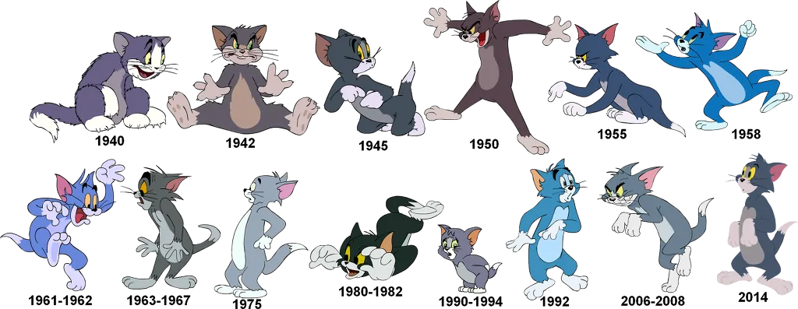
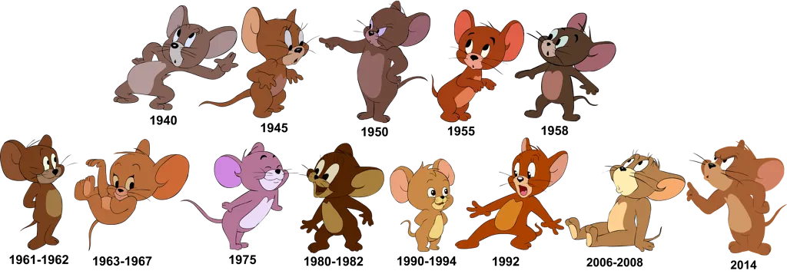

키즈쇼임
유아퇴행 약 먹었나봄
합법적 로리
코난 약 먹음
톰보이 모름?
https://youtu.be/Vhwb63_EKro
그러고 보니 본인 기억으로 이게 처음 본 톰과 제리 시리즈였음...
다른건 다 괜찮은데 솔직히 1990 ~ 1994 디자인은 ㄹㅇ 사도픽임
50~60 년대 그림체가 근본이네
개인적으론 45에서 55까지가 제일 그림체가 안정적이고 자주 보게되더라
1950이 쌉근본이네
1950이 짱구 순수 재미 시절에 비빔 ㅋㅋㅋ
50~62까지가 재미 고트
어렸을때 감기걸려서 혼자 집에서 골골대며 비디오로 톰과제리를 본 기억이나네
프레드큄비 시절이 재밌음
1945랑 1950이 좋은듯
제리는 생각보다 원형 유지 잘 했네
뭔가 톰은 고양이같지 않음
50년대가 제일 친숙하네
해나 바바라 시절이 제일 재밌더라
50이 근본 넘치네
63 67 제리가 ㄹㅇ 순수악임
50이 표독 그 자체
50이 제일 익숙하네 이게 제일 유명한가?
1950
50이 제일 친숙하네 ㅋㅋㅋㅋ
옛날에 90-94 비디오판 톰과제리 있어서 꼬맹이 버전도 나름 익숙함
저때 드루피도 같이 들어있었던 걸로 기억하는데 나름 재밌었어
옛날 그림체 좋다
~1958까지가 근본 시절이었을거임
그뒤로는 아예 다른 작품이고
톰과제리 키즈쇼는 첫 현대화판이라 나름 괜춘했는데
요즘은 모에화되던데
80~82는 무서워
50년대가 제일 익숙하네
와 제일 고트그림체가 50년대꺼네
63년 67년이 속눈썹있어서 더 귀여움
와 꽤 역사기 오래된 캐릭터들이였구나
내가 제일 잘아는건 1950년대인가보네

난 90년대가 귀여운디
45-58 goat
근본 그림체가 50년도라니
50이 근본이지
58은 톰이 좀 어리숙했고 50이 WWE잘해줬음
톰은 브리티시 숏헤어다
보다보면 심슨에 릴로와 스티치 처럼 기괴한 에피소드가 있긴해
90~94년은 뭔일이 있었냐